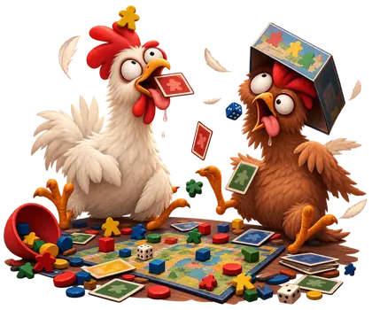
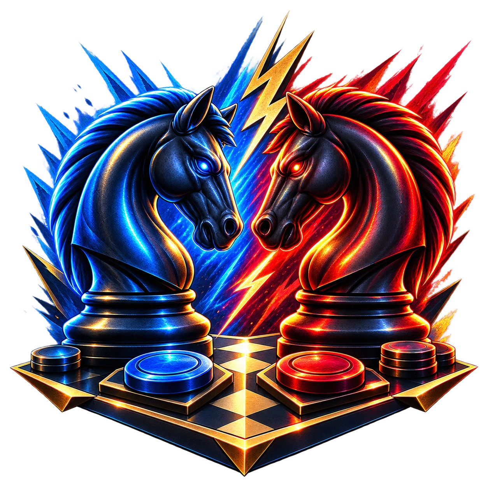
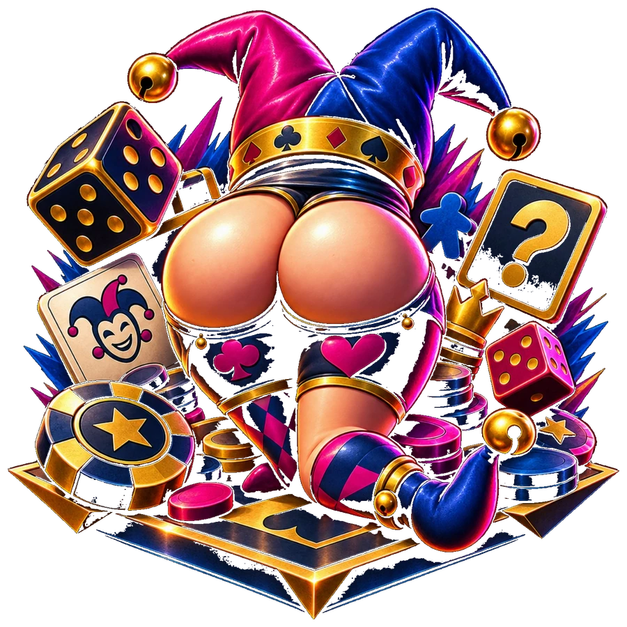

Premessa regolamentare. Il presente Regolamento disciplina lo svolgimento della Stagione Tavologiochistica Avanguardistica, dei singoli Tornei, delle relative classifiche e dell'assegnazione dei riconoscimenti. Le disposizioni qui contenute sono da considerarsi definitive fino a quando i due Pretendenti non decidano, con l'inutile solennità richiesta dalla materia, di modificarle.
TITOLO I - LA STAGIONE
Art. 1 - La Stagione
- La Stagione costituisce il periodo ufficiale entro il quale vengono disputati i Tornei validi ai fini della classifica e dei Premi.
- La Stagione può svolgersi in qualunque periodo dell'anno. I Pretendenti stabiliscono preventivamente data di inizio e data di fine nella ratifica del presente Regolamento.
- Nessun Torneo iniziato successivamente alla data di fine stabilita produce effetti sulla Stagione conclusa, salvo proroga concordata da entrambi.
Art. 2 - La Premiazione
- La conclusione della Stagione comporta la proclamazione del Campione, l'assegnazione della Coppa Tavologiochistica e degli Award.
- La data prevista della Premiazione è stabilita dai Pretendenti all'apertura della Stagione e riportata nella ratifica finale.
- Le date possono essere derogate di comune accordo per comprovate esigenze organizzative, logistiche, digestive, lavorative, familiari, sopravvenuta constatazione che «si è fatta una certa» o altre cause di analoga gravità.
TITOLO II - IL TORNEO TAVOLOGIOCHISTICO AVANGUARDISTICO
Art. 3 - Natura avanguardistica
- Il Torneo Tavologiochistico Avanguardistico nasce dalla convergenza regolamentare tra il Torneo Tavologiochistico e il Torneo Cartogiochistico.
- Il Torneo può comprendere liberamente giochi appartenenti a entrambe le discipline, ma non può essere composto esclusivamente da giochi cartogiochistici.
- La presenza di almeno un gioco tavologiochistico è condizione necessaria al mantenimento della qualifica di Avanguardistico.
- La Tabella Parametristica identifica i giochi cartogiochistici mediante la voce Carte: SI.
- Jaipur e Love Letter non sono considerati cartogiochistici in quanto prevedono, oltre alle carte, componenti fisiche non meramente accessorie che partecipano al sistema di gioco e/o alla determinazione del risultato.
Art. 4 - Composizione
- Ogni Torneo è composto da un numero dispari di giochi. Il formato ordinario è di cinque giochi.
- È ammesso un numero dispari differente quando durata o complessità lo rendano opportuno.
- Se, per durata, complessità o manifesta pesantezza, il Torneo è costituito da una sola partita, assume la denominazione ufficiale di Torneo Tavologiochistico Bottasecchistico Avanguardistico. La singola partita costituisce l'intero Torneo.
- Tutti i giochi previsti devono essere disputati anche quando il vincitore sia già matematicamente determinato.
- Il Torneo può essere chiuso anticipatamente solo per decisione concorde dovuta a inderogabili esigenze della vita reale: sonno, fame, lavoro il mattino dopo, impegni dimenticati, persone che chiedono inspiegabilmente attenzione o constatazione che «si è fatta una certa».
TITOLO III - LA SELEZIONE DEI GIOCHI
Art. 5 - Diritto di scelta
- Nel formato ordinario a cinque giochi, ciascun Pretendente seleziona due giochi.
- I quattro giochi entrano automaticamente nel programma del Torneo.
- Il quinto, denominato Gioco Dispari, è determinato secondo l'Art. 6.
Art. 6 - Il Gioco Dispari e la Ruota Tavologiochistica
- Il diritto di scegliere il Gioco Dispari spetta al Pretendente che, all'inizio del Torneo, si trovi in svantaggio nel numero complessivo di Tornei vinti nella Stagione.
- In situazione di parità il Gioco Dispari viene scelto di comune accordo. In assenza di accordo, ciascun Pretendente indica un gioco e i due giochi vengono inseriti nella Ruota Tavologiochistica.
- L'ordine di disputa dei giochi viene stabilito di comune accordo. In assenza di accordo è determinato mediante Ruota Tavologiochistica: il gioco estratto viene rimosso e occupa il primo posto ancora disponibile, procedendo fino alla definizione dell'intera sequenza.
- L'esito della Ruota è definitivo e non è impugnabile per sfortuna, ingiustizia percepita, sospetto complotto o «era ovvio che usciva il tuo».
TITOLO IV - LA PARTITA DEI POLLI

Art. 7 - Definizione e validità
- Quando viene introdotto un gioco mai precedentemente giocato da entrambi, la prima partita assume automaticamente la denominazione ufficiale di PARTITA DEI POLLI.
- La Partita dei Polli è valida ai fini del Torneo esclusivamente se vinta dal Pretendente in svantaggio nel numero di Tornei vinti nella Stagione.
- Se vinta dal Pretendente in vantaggio, non viene conteggiata ai fini del Torneo e il gioco viene disputato nuovamente.
- Lo status di Pollo, una volta perduto per un determinato gioco, non può essere riacquisito per alcuna ragione. Il decorso del tempo, la perdita di memoria delle regole, l'assenza prolungata dal tavolo o la dichiarazione «non mi ricordo più un cazzo» non costituiscono titolo valido per il ripristino dello status.
TITOLO V - LA CLASSIFICA STAGIONALE
Art. 8 - Vittoria del Torneo
- Il vincitore di ciascun Torneo ottiene una vittoria di Torneo.
- La vittoria è attribuita al Pretendente che abbia vinto il 50% + 1 dei giochi previsti dal Torneo.
- Ai fini della Coppa non rileva il margine con cui il Torneo viene vinto.
- Le partite successive alla matematica assegnazione del Torneo rimangono valide ai fini degli Award e delle statistiche ufficiali.
Art. 9 - Coppa Tavologiochistica e parità
- Al termine della Stagione vince la Coppa il Pretendente con il maggior numero di Tornei vinti.
- In caso di parità non si applica alcun criterio statistico di spareggio.
- La Coppa viene assegnata mediante una Finalissima Bottasecchistica Tavologiochistica, costituita da una partita secca.
- Ciascun Pretendente seleziona tre giochi. I sei giochi vengono inseriti, con pari dignità e probabilità, nella Ruota Tavologiochistica.
- Il gioco estratto è il campo di battaglia definitivo. Il vincitore della partita è proclamato Campione Tavologiochistico della Stagione.
- Né il numero complessivo di singole partite vinte né gli Award possono essere utilizzati come spareggio.
TITOLO VI - IL SISTEMA TAVOLOMETRICO E GLI AWARD
Art. 10 - Tabella Parametristica
- È istituita la Tabella Parametristica dei Giochi del Torneo Tavologiochistico Avanguardistico.
- Ogni gioco è classificato da 1 a 5 secondo Logica, Strategia, Tattica, Duello, Fortuna, Pianificazione, Gestione e Lettura dell'avversario.
- La Tabella riporta inoltre tempo indicativo, classificazione cartogiochistica e coefficienti dei quattro Award.
- I coefficienti sono: Strategistico = 40% Strategia + 30% Pianificazione + 20% Gestione + 10% Logica; Tatticistico = 50% Tattica + 30% Logica + 20% Gestione; Duellistico = 50% Duello + 30% Lettura avversario + 20% Tattica; Culistico = Fortuna.
- È vietata la modifica retroattiva dei parametri a seguito di risultati statisticamente scomodi, politicamente inopportuni o offensivi per l'autostima.
COME SI CALCOLANO I 4 COEFFICIENTI - VERSIONE A PROVA DI POLLO
Prima assegna al gioco un voto da 1 a 5 per gli 8 parametri. Poi calcola i quattro numeri sotto. Le percentuali sono semplicemente dei pesi: moltiplica il voto per la percentuale e somma i risultati.
Premio Strategistico
Premio Tatticistico
Premio Duellistico
Premio Culistico
1. Tutte le vittorie danno punti per l'Award: per ogni vittoria si prende il coefficiente di quel gioco, anche se è basso.
2. Per essere ammesso a concorrere a uno specifico Award devi però aver ottenuto almeno 3 vittorie in giochi con coefficiente di quell'Award superiore a 3,00. Questa è solo la soglia di ammissione: non decide quali punti entrano nel calcolo.
3. Una volta superata la soglia, somma i coefficienti dell'Award di tutte le tue vittorie e dividi per il numero totale delle tue vittorie.
Esempio: hai 5 vittorie e, per lo Strategistico, valgono 4,20 + 3,50 + 4,00 + 2,20 + 1,80 = 15,70. Hai almeno 3 vittorie sopra 3,00, quindi sei eleggibile. 15,70 ÷ 5 = Indice Strategistico 3,14.
4. Tra i Pretendenti eleggibili, chi ha l'Indice più alto vince l'Award. In questo modo tutti i punti contano, ma vincere più partite non garantisce automaticamente l'Award.
Art. 11 - Principio dell'Indice Award
- Ai fini del calcolo dell'Indice Award, ogni vittoria conseguita nella Stagione attribuisce il coefficiente del relativo Award previsto per il gioco disputato.
- Per poter concorrere a uno specifico Award, il Pretendente deve aver ottenuto almeno tre vittorie in giochi il cui coefficiente del medesimo Award sia superiore a 3,00.
- Il requisito di cui al comma precedente costituisce esclusivamente condizione di eleggibilità: una volta raggiunto, nel calcolo dell'Indice concorrono i coefficienti di tutte le vittorie, indipendentemente dal loro valore.
- L'Indice Award è determinato dividendo la somma dei coefficienti dell'Award ottenuti in tutte le vittorie per il numero totale delle vittorie del Pretendente.
- L'Award è assegnato, tra i Pretendenti eleggibili, a quello con l'Indice più elevato. Se uno solo soddisfa il requisito minimo, l'Award spetta a quest'ultimo; se nessuno lo soddisfa, l'Award non viene assegnato.
Art. 12 - Premio Strategistico
- Riconosce il Pretendente più efficace nei giochi in cui prevalgono costruzione del piano, sviluppo a medio-lungo termine e gestione delle risorse.
- Il valore strategico di ciascuna vittoria è determinato dalla ponderazione stabilita dalla Tabella Parametristica.
- L'assegnazione avviene mediante l'Indice Award di cui all'Art. 11.
Art. 13 - Premio Tatticistico
- Riconosce il Pretendente più efficace nel risolvere la situazione presente, sfruttando opportunità, vincoli e risorse nel momento in cui si manifestano.
- Il valore tattico di ciascuna vittoria è determinato dalla ponderazione stabilita dalla Tabella Parametristica.
- L'assegnazione avviene mediante l'Indice Award di cui all'Art. 11.

Art. 14 - Premio Duellistico
- Riconosce il Pretendente che abbia dimostrato la maggiore efficacia nel confronto diretto con l'altro.
- Il valore duellistico è determinato secondo la ponderazione: 50% Duello + 30% Lettura dell'avversario + 20% Tattica.
- L'assegnazione avviene mediante l'Indice Award di cui all'Art. 11.
Art. 15 - Premio Culistico
- Riconosce, con la serietà statistica che la materia merita, le vittorie rilevanti nei giochi caratterizzati da componente aleatoria.
- Il coefficiente coincide con il valore Fortuna attribuito al gioco.
- Sono rilevanti le vittorie con Fortuna almeno 3 e resta necessario il requisito minimo di tre vittorie rilevanti.
- L'Indice Culistico è la media del valore Fortuna nelle vittorie rilevanti.
- L'assegnazione non costituisce prova scientifica dell'effettiva fortuna del vincitore, ma prova regolamentare più che sufficiente per rinfacciargliela.

TITOLO VII - I PRINCIPI GENERALI
Art. 16 - Parità regolamentare
- Salvo le specifiche disposizioni poste a tutela del Pretendente in svantaggio, entrambi godono dei medesimi diritti tavologiochistici.
- Il vantaggio acquisito deve essere conseguenza del gioco e non del Regolamento.
Art. 17 - Spirito della competizione
- La Stagione persegue l'individuazione del miglior Tavologiocatore, la misurazione delle specializzazioni strategiche, tattiche e duellistiche, l'accertamento statistico del culo e la progressiva costruzione di un albo e di una tradizione tavologiochistica.
- La rivalità deve essere sufficientemente seria da rendere importante vincere, ma non abbastanza seria da giustificare comportamenti antisportivi.
Art. 18 - Norma fondamentale
- In caso di controversia interpretativa prevalgono nell'ordine: buon senso; accordo tra i Pretendenti; metodo casuale concordato; Ruota Tavologiochistica.
- È espressamente vietato modificare retroattivamente una regola perché «se lo sapevo prima giocavo diversamente».
RATIFICA DELLA STAGIONE
Con la sottoscrizione del presente documento, i Pretendenti dichiarano di aver letto, compreso e accettato il Regolamento e di impegnarsi a non fingere di non ricordarne le parti sfavorevoli al momento opportuno.
Le date sopra indicate sono derogabili esclusivamente di comune accordo per le esigenze previste dall'Art. 2, comma 3, o per ulteriori circostanze che i Pretendenti riescano a descrivere con sufficiente faccia seria.